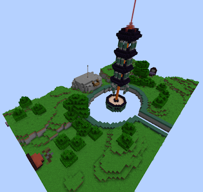
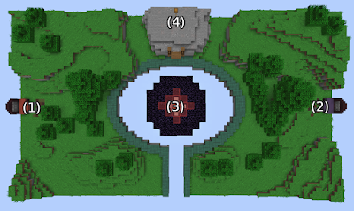
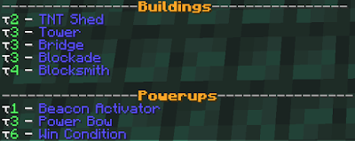
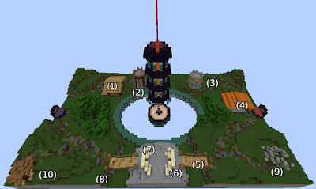

I initially wrote the second section, "The Take Away", to provide initial play test feedback, but after writing, I felt that it had a little bit of formatted substance which would fit perfectly as a blog post. So here we are. I have included an additional introduction to explain this map for those who may not be familiar.
All numbers preceded with a "~" are approximations since I do not recall the exact value, but I feel that each ~# give a general perspective on how that mechanic may interact throughout the game.
To set the stage, Lesmor (by Ausxh and OC) is a team based Minecraft PvP map where 1 match consists of a team winning 10 rounds. Each round ends when all players on a team have been killed, a central control point is captured (~7 seconds), or time expires (~5 minutes). A draw occurs if time expires, at least 1 player on each team remains, and the point has not been captured. All players have 1 life per round and are outfitted with a basic kit of a bow, ~10 blocks, leather armour, knockback wood sword, and ~64 arrows. Saturation is given. The map is spatially small and mildly asymmetric. Building and mining can take place during a round but the map is reset/rebuilt after each round.
A few locations of interest include; (1) red spawn, (2) blue spawn, (3) the capture point, and (4) the ender pearl hill. On the ender pearl hill, there is an elevated chest (out of reach without building) with 1 ender pearl in it. This acts as the first map objective and is usually contested at the start of each round.
At the end of each round, points are awarded to the teams. ~1 point for each enemy player eliminated, ~2 points for a win, ~1 point for a loss, ~1 point to each team in the event of a draw. With these points, teams can choose from a list of upgrades to buy.
Powerups can only be purchased once per round and apply to only 1 player. They are lost at the end of the round. Win condition forces a match victory if the holder of the power up captures the control point. Buildings place predesigned structures onto the map and are automatically replaced after every round once purchased. The TNT shed and blocksmith provide a (nearly infinite, in the scope of a round) supply of their respective blocks, while the other structures reinforce and define choke points. Every structure includes; (1) blue blocksmith, (2) blue tower, (3) red tower, (4) red blocksmith, (5) red bridge, (6) blue blockade, (7) red blockade, (8) blue bridge, (9) red TNT shed, (10) blue TNT shed.
I played the map a handful of times with teams of 3.
Interesting mechanics in the map include; the ability to edit the voxel world (as with most maps), the economy, and the changing of the map with structure purchases. At a certain point (after some round n), the player realizes that any thoughtful map/voxel edits become pointless to invest time in, the economy becomes static with sole purchases of power bows, and all wanted structures are purchased. From here the game snowballs into a raw Minecraft PvP mechanic simulator, and it is safe to say that raw Minecraft PvP mechanics are awful. Shifting game play towards the interesting map mechanics and away from raw Minecraft PvP mechanics should and can be achieved by strengthening the interesting mechanics to be continuous and persistent through multiple rounds in a match (action in one round have an effective in another round).
The time sink for obtaining resources relative to the potential and maximum round length is too great for constructing fortifications, TNT cannons, or mobility infrastructure all for it to disappear at the end of the round. The extra 8 to 10 seconds is enough for the other team to take a pivotal lead in the round through map control or objective (not specifically the actual capture point) play. If player built structures persist it might be a valid trade for losing a round. A level redesign and/or restrictions/rules to persistent building are probably necessary for this route.
The problem with the static bow economy is that the economy, an interesting mechanic, becomes an active play for only 1 player every round after n rounds. Structures and other non player targeted purchases are great since they continue to be an active play mechanic that can be manipulated by any player throughout the duration of a round. This idea may have been lost in transition from Counter Strike. Weapons dropping after player deaths, as seen in CS, keep the economic investment as an active, more complicated, and therefore more interesting, play mechanic for other players. The removal of purchases applying to single players in favour of team wide upgrades would be fine. If player based purchases are to persist, there should be a lot more player targeted purchases to make; more than number of players and what is economically possible. Somewhere greater than number of players * 3 maybe.
Purchasing of structures is concluded after n→5 rounds; 25% - 50% of the game. The static economy becomes a consequence and players can no longer edit the voxel properties of the map with lasting intentions (purchasing structures). Structure purchasing can then solve both problems. If purchased structures are cleared after a defeat, every round, or player caused destruction is persistent across rounds, it could lead to greater economic decision making through counter playing. Structures should continue to server 1 of 3 purposes; choke point creation/offensive position, choke point counter/defensive position, resource (blocks, TNT, tools, weapons) stash. By making structures dynamic across rounds a strategic drafting match can then be played between teams by applying economic pressure and forcing a team to chose what they value. A choke point that worked well last round but can be countered this round? A set of defensive structures to "save" economically? Resources to focus on structure denial and outplay potential? In an obviously one sided match; winning economy should give a structures advantage, or losing economy should not give a structure advantage. Round pay outs would need to be increased to some function of n rounds.
From changes to the structure system, players that want to make long term edits to the map can now continue to do so past round n since structure denial and counter plays would be introduced. This applies a force to the economy of each team forcing a variation of purchases. Interesting and fun mechanics offered by the map are then reinforced and made more prevalent instead of reliance on the generic raw Minecraft PvP mechanics.